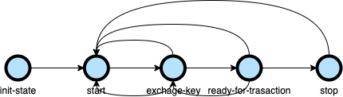
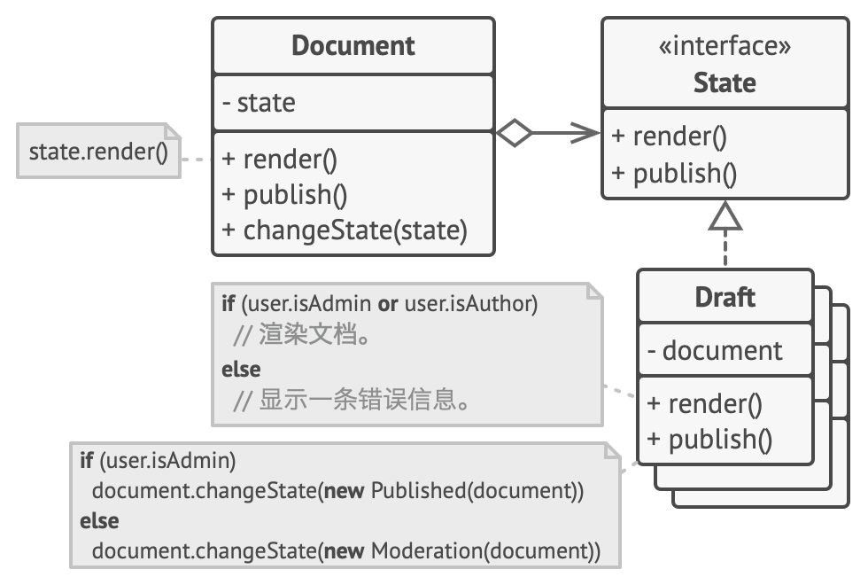

什么是状态模式
状态模式是一种行为设计模式，让你能在一个对象的内部状态变化时改变其行为，使其看上去就像改变了自身所属的类一样。其主要思想是程度在任意时刻仅处在几种有限的状态中。在任何一个特定状态中，程序的行为都 不相同，且可瞬间从一个状态切换到另一个状态。状态机有3个部分组成：状态(State)、事件(Event)、动作(Action)。其中，事件也称为转移条件(Transition Condition)。事件触发状态变化及动作的执行。不过，动作不是必须的，也可能只转移状态，不执行任何动作。
举个例子
举个例子进一步解释一下，在工作中，接触了一个交易转发引擎，这个引擎将某一种类型的交易转发给对应的银行的系统，例如mastercard。

在这个交易转发状态图中，状态机的初始状态是init-state
- 当遇到
START事件时，状态从init-start变成start - 在
start状态下，当遇到EXCHANGE-KEY事件时，变成exchange-key状态 - 在
exchange-key状态中，会跟银行的服务交换一个key，用来加密数据，当key交换完成后，会提交一个READY-FOR-TRANSACTION事件，状态变成ready-for-transaction - 在
ready-for-transaction状态下，碰到STOP事件，状态变成stop - 在
ready-for-transaction状态下，如果key过期了，那么会提交一个KEY-EXPIRED事件，状态变成exchage-key
在这几个状态转换中，当处于exchange-key时，可以和银行服务器，交换密钥；当处于ready-for-transaction时，可以转发transaction, 这就是在改变状态机的状态时，改变其行为。
实现方式
分支逻辑法
在这种方式下，状态机通常由众多条件运算符 （ if或 switch ） 实现， 可根据对象的当前状态选择相应的行为。
1 | public class StateMachine{ |
当我们逐步在 StateMachine类中添加更多状态和依赖于状态的行为后， 基于条件语句的状态机就会暴露其最大的弱点。 为了能根据当前状态选择完成相应行为的方法， 绝大部分方法中会包含复杂的条件语句。 修改其转换逻辑可能会涉及到修改所有方法中的状态条件语句， 导致代码的维护工作非常艰难。
这个问题会随着项目进行变得越发严重。 我们很难在设计阶段预测到所有可能的状态和转换。 随着时间推移， 最初仅包含有限条件语句的简洁状态机可能会变成臃肿的一团乱麻。
状态模式
状态模式将对象的所有可能状态建一个类，然后将所有状态的对应行为抽取到这些类中。

原始对象被称为上下文 （context）， 它并不会自行实现所有行为， 而是会保存一个指向表示当前状态的状态对象的引用， 且将所有与状态相关的工作委派给该对象。
如需将上下文转换为另外一种状态， 则需将当前活动的状态对象替换为另外一个代表新状态的对象。 采用这种方式是有前提的： 所有状态类都必须遵循同样的接口， 而且上下文必须仅通过接口与这些对象进行交互。
这个结构可能看上去与策略模式相似， 但有一个关键性的不同——在状态模式中， 特定状态知道其他所有状态的存在， 且能触发从一个状态到另一个状态的转换； 策略则几乎完全不知道其他策略的存在。
状态模式结构
-
上下文 （Context） 保存了对于一个具体状态对象的引用， 并会将所有与该状态相关的工作委派给它。 上下文通过状态接口与状态对象交互， 且会提供一个设置器用于传递新的状态对象。
-
状态 （State） 接口会声明特定于状态的方法。 这些方法应能被其他所有具体状态所理解， 因为你不希望某些状态所拥有的方法永远不会被调用。
-
具体状态 （Concrete States） 会自行实现特定于状态的方法。 为了避免多个状态中包含相似代码， 你可以提供一个封装有部分通用行为的中间抽象类。
状态对象可存储对于上下文对象的反向引用。 状态可以通过该引用从上下文处获取所需信息， 并且能触发状态转移。
-
上下文和具体状态都可以设置上下文的下个状态， 并可通过替换连接到上下文的状态对象来完成实际的状态转换。
状态模式应用场景
-
如果对象需要根据自身当前状态进行不同行为， 同时状态的数量非常多且与状态相关的代码会频繁变更的话， 可使用状态模式。
模式建议你将所有特定于状态的代码抽取到一组独立的类中。 这样一来， 你可以在独立于其他状态的情况下添加新状态或修改已有状态， 从而减少维护成本。 -
如果某个类需要根据成员变量的当前值改变自身行为， 从而需要使用大量的条件语句时， 可使用该模式。
状态模式会将这些条件语句的分支抽取到相应状态类的方法中。 同时， 你还可以清除主要类中与特定状态相关的临时成员变量和帮手方法代码。
-
当相似状态和基于条件的状态机转换中存在许多重复代码时， 可使用状态模式。
状态模式让你能够生成状态类层次结构， 通过将公用代码抽取到抽象基类中来减少重复。
状态模式的优缺点
优点
- 单一职责原则。 将与特定状态相关的代码放在单独的类中。
- 开闭原则。 无需修改已有状态类和上下文就能引入新状态。
- 通过消除臃肿的状态机条件语句简化上下文代码。
缺点
如果状态机只有很少的几个状态， 或者很少发生改变， 那么应用该模式可能会显得小题大作
If you like this blog or find it useful for you, you are welcome to comment on it. You are also welcome to share this blog, so that more people can participate in it. If the images used in the blog infringe your copyright, please contact the author to delete them. Thank you !